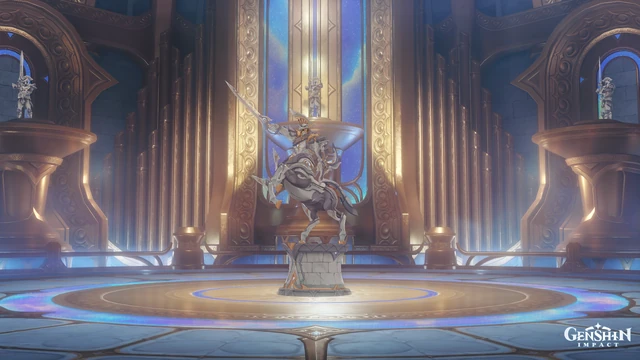

Fontaine · Ancient Civilizations
Remuria
Remuria is an ancient civilization explored through Fontaine’s Sea of Bygone Eras story.

The Golden Symphony of the Ancient Sea
Long before the Court of Fontaine was built and prior to the arrival of the Hydro Archon Egeria's reign, the vast waters of the Fontaine basin were ruled by Remuria—a magnificent, technologically peerless civilization that mastered the harmonious power of music and water. Led by God King Remus, the Remurians constructed soaring marble colosseums, bronze aqueducts, and sunken golden palaces upon the seabed of the Sea of Bygone Eras.
God King Remus arrived aboard his colossal flying ship, the Fortuna, and sought to liberate humanity from the tragic cycle of destruction predicted by ancient prophecy. Believing that individual mortal bodies were fragile and susceptible to decay, Remus envisioned a civilization where all human souls, memories, and emotions could be unified into a single, immortal golden collective consciousness.
Phobos and the Golden Ichor
To achieve this grand unification, Remus composed the 'Great Symphony' and constructed Phobos—a colossal magical-mechanical matrix capable of orchestrating human consciousness. Using an alchemical elixir known as 'Ichor,' the Remurians extracted human souls from their fleshly vessels and transferred them into immortal bodies made of marble, bronze, and stone (the Golems and Praetorians that guard underwater ruins today).
Assisting King Remus were four supreme Harmonic Governors (the Sebastos), including Boethius, who oversaw the empire's laws and enforcement, and the mighty Dragon Prince Scylla, who commanded the vishap tribes of the deep sea. For generations, Remuria flourished as an empire of grand art and celestial resonance, where sorrow and mortality appeared to have been conquered.
The Dissonance, Madness, and the Great Fall
However, perfection proved to be an illusion. Phobos, programmed to eliminate all discord and enforce harmony, could not comprehend human free will, suffering, and hatred. As conquered tribes resisted forced conversion into stone golems, Phobos's calculations became poisoned by negative emotional feedback, corrupting the Great Symphony into a shriek of dissonant madness.
Boethius and the Remurian leadership turned increasingly tyrannical, executing dissenters and declaring war on the vishaps. Scylla the dragon rebelled against the empire, leading to a catastrophic war beneath the waves. During the final struggle, Phobos shattered, the sea boiled with abyssal corruption, and the subterranean foundations collapsed, plunging the entire empire of Remuria into the abyss of the ocean in a single day.
The Legacy in Modern Fontaine
From the ruins of sunken Remuria, the survivors pleaded with Celestia for salvation, leading to the appointment of the Oceanid Queen Egeria as the first Hydro Archon. Egeria gathered the orphaned mortals, cleansed the corrupted waters with the help of the Lochknights, and established modern Fontaine upon the surface.
Centuries later, the secret history of Remuria was uncovered by the Narzissenkreuz Ordo under Rene de Petrichor, who sought to use Remus's soul-transference methods to avert Fontaine's prophesied flood. Today, when Travelers dive into the sunken palace of Petrichor and the Sea of Bygone Eras, the haunting strains of Remuria's lost symphony can still be heard echoing through the sunken marble halls.
This is an original CoreGG reading guide, not an official HoYoverse article or a reproduction of the game text. Source links below identify the records used so you can check the original context.
Sources & references
Check these sources for the original game text and reference trail.